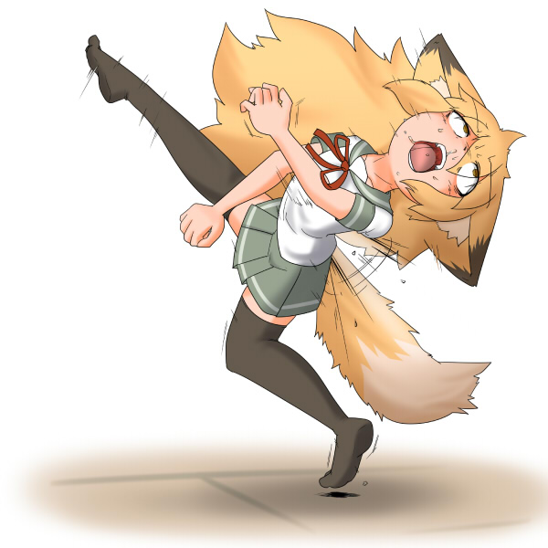

|
気がつくと、隣の部屋でサキツネが寝ていた。 六畳の和室。畳の上にうつ伏せになったまま、気持ちよさそうに寝息を立てている。時折尻尾の先が跳ねるように動いていた。服装はいつもと変わらぬ緑色のセーラー服。 「気持ちよさそうに寝てるなぁ」 無防備に眠るサキツネを見ながら、俺は短く吐息した。 窓から差し込む午後の日の光。少しだけ開けられたガラス戸からは、涼しい風が流れ込んでいる。この部屋は日当たりがよく、風通しもよいため眠るには最適だ。 ふと、俺は目を移す。 タンスの上に並んだ小物類。小さな植木鉢やきれいな石ころ、よく分からない彫刻品など。お礼のつもりかサキツネが置いていったものである。 その中に、小さなサキツネ人形があった。 「そういえば、これだけ浮いてるよな？」 ひょいと腕を伸ばし、俺は人形を手に取る。 サキツネをデフォルメしたような人形――というか、ぬいぐるみかな？ 大きさは三十センチくらいで、材料は普通の布とかっぽい。中に何か仕込まれているようなこともなく、至って普通の人形だ。 でも、考えてみると奇妙なもんだ。 「こいつが作ったのか？」 その場に腰を下ろし、俺はサキツネを見る。うつ伏せのまま変わらず寝息を立てる、狐の少女。頬を緩めて、口元にだらしない笑みを浮かべていた。至福の表情っていうのは、多分こういう顔の事を示すのだろう。 器用なのか不器用なのかは知らないけど、この狐娘が自分の人形を作るというのは、いまいち想像が付かない。布と綿を針と糸でチクチというのは。 「うーん」 俺は何の気無しに、人形の腕を持ち上げて。 サキツネの腕が持ち上がった。 ……ん？ 数秒ほど固まってから、人形の腕を上下に動かす。すると、同じようにサキツネの腕も上下に動いた。人形の足を持ち上げると、サキツネの足も持ち上がる。人形の尻尾を動かすと、同じようにサキツネの尻尾も動いた。 「これは、謀られているのか、俺？」 サキツネは相変わらず眠っている。眠っていると思う。少なくとも起きているようには見えない。でも、実は起きていて、俺をからかっているのかもしれない。 どうしよう？ 俺は人形の頭を押さえて、後ろに仰け反らせる。 すると、サキツネも同じように上半身を仰け反らせた。口元から涎を垂らして眠ったまま。どう考えも重心的に無理だろ、てな体勢になっている。さすがにこれは苦しいのか、顔をしかめていた。 手を放す。 サキツネが顔から畳に落ちた。 「んぐ」 くぐもった声を上げて、尻尾と狐耳を動かす。一度背伸びをしてから、サキツネが顔を上げた。起きたようである。顔をぶつけたのは普通に痛かったらしく、右手で顔を撫でていた。見た感じ、自分に何が起ったのか分かっていないっぽい。 「おはよう」 「おはようございました……」 俺の声に、手短な挨拶をしてくる。 ここに至って、どうやら悪戯では無いのだと、俺も理解した。 でも、やっぱり気になるので、ちょっと出来心で人形を捻ってみる。腰の辺りを右手で掴んで、頭に左手を添え、上半身を大体百八十度くらい。 「うぎぎいゥ！」 人形と同じように上半身を思い切り捻り、サキツネは苦悶の声を絞り出した。ばたばたと両手を動かし、顔を真っ赤にして歯を食いしばってる。爆ぜるように逆立っている尻尾の毛。というか、上半身を前後逆にするって凄いなぁ。 俺が手を放すと、サキツネが元に戻る。 「うぅ……」 よろよろとその場に起き上がり、サキツネはあぐらをかいた。ぐったりとした表情で、腰やら胸やらを両手でさすっていた。完全に目が覚めたようである。 「何それ？」 俺が持っている人形に人差し指を向けた。この人形が原因であることは、寝起きの頭でもすぐに分かったらしい。他に原因になりそうなものもないし。 人形の右手を上下に動かすと、一緒にサキツネの右手も上下に動く。 「お前が持ってきた人形じゃないか？ いつの間にかに置いてあったけど」 「それで、これは一体？」 勝手に動く右手を左手で押さえながら、訊いてきた。左手で押さえるけど、右手の動きを止めることはできない。動く力の方が強いようだった。 「さあ？ 自分で作ったんじゃないのか？」 人形の首を九十度横に向ける。 同時にサキツネが真横を向いた。 「心当たり無し」 横を向いたまま、腕組みをする。不満を示すように尻尾が上下に動いていた。 仕組みはよく分からないけど、俺が動かしている部分以外は自由に動くみたいだな。逆に人形が動いた部分は、全く手が出ないらしい。 なるほど。ふと思い付いたので、実行。 「とりゃ」 「ほあっ！」 気の抜けた悲鳴とともに、両手両足を開いて後ろに倒れた。受け身も取れずに後頭部をぶつける。仰向けの大の字になっているサキツネ。そこから動けないようだった。人形は俺の手で全身を押さえられている。 なんか、凄いなー。 てか、パンツ見えているし。 人形から手を放すと、サキツネが身体を起こした。 「………」 ジト眼で俺を見つめてから。 あ。マズイか――も…… ドゴッ！ その音は酷く遠くに聞こえた。意識が数秒吹っ飛ぶ。 感覚の消えた世界で、衝撃が遅れてやってきた。床に倒れたのだと理解する。 一度切れた回線が再接続されていく感覚。吹っ飛んでいた五感が戻ってくる。霞んでいた視界に、畳とタンスが映った。耳の奥に響く金属音。顎から鼻の奥に鈍い痛みが滲んでいる。突き出されたサキツネの爪先に、俺はなすすべなく頬を蹴り抜かれていた。 迷わず爪先蹴りって……気持ちは分かるけど、凄く痛いです。 顔に手を当ててみる。幸い鼻血は出ていない。顎にも多分異常なし。 手加減したのかもしれない。 「いや、すまんすまん……」 平謝りに謝りながら身体を起こすと。 なぜかサキツネが倒れていた。みぞおちを両腕で押さえて身体を折り曲げ、苦しげに痙攣している。小刻みに震える狐耳と尻尾。白目を剥いて、口から涎を垂らしていた。 まさに痛恨の一撃！ 「……なぜ？」 俺の疑問はすぐに解決した。 近くにサキツネ人形が転がっている。その腹の辺りが凹んでいた。そういえば、サキツネに蹴られる瞬間、コレで顔を庇ったよーな気がしなくもない……。 うん、つまり人形を蹴ったことで、その痛みが本人に還元されたのか。多分、体格比五倍くらいの威力となって。洒落んなんねー！ 「生きてるかー？」 蹴られた頬をさすりつつ、俺は声を掛ける。 サキツネの目に光が戻った。瞬きした目に、黄色い瞳が現れる。 そのまま勢いよく飛び起きた。今までの悶絶が嘘だったかのように、床から跳ね起き空中で一回転。両足で着地してから、身体を前傾させ右足を後ろに引く――サッカーボールを思い切り蹴るように。 この狐っ娘はワザとやっているんじゃないだろうか？ 俺は時々そう考えることがあった。 「ふんっ！」 サキツネの右足が畳に落ちていた人形を蹴り抜く。 足の甲の直撃を背中に受けて、人形の形が歪んだ。 「が――はッ……！」  瞬間、人形と同じように仰け反るサキツネ。車に撥ねられたかのように。白目を剥き、顎が外れるかと思うほどに口を開いて、擦れ声を微かに漏らす。人形を蹴ったダメージが自身に返ってきたらしい。大体五倍くらいに強化されて。 吹っ飛んだ人形がタンスの角にぶつかった。顔から。 サキツネの首があらに方向に曲がる。 「おﾞ――？」 喉からこぼれた、意味の無い呟き。 タンスの角で跳ね返った人形が、回転しながら床に落ちた。ぽふりと、擬音を付けるならそんな感じだろう。実際には音も立てず、軽薄な落下である。人形、というかぬいぐるみだからそんなものだ。 ひたすら軽い人形とは対照的に。 重い音を立てて、サキツネが崩れる。一度膝を突き、前のめりに倒れていった。髪の毛と尻尾が少しだけなびく。畳に突っ伏した時には、既に意識を失っていた。 一時間後に目を覚ましたサキツネ。 呪いの人形を抱えて、どこかに行ってしまった。 処分する、とのこと。 |